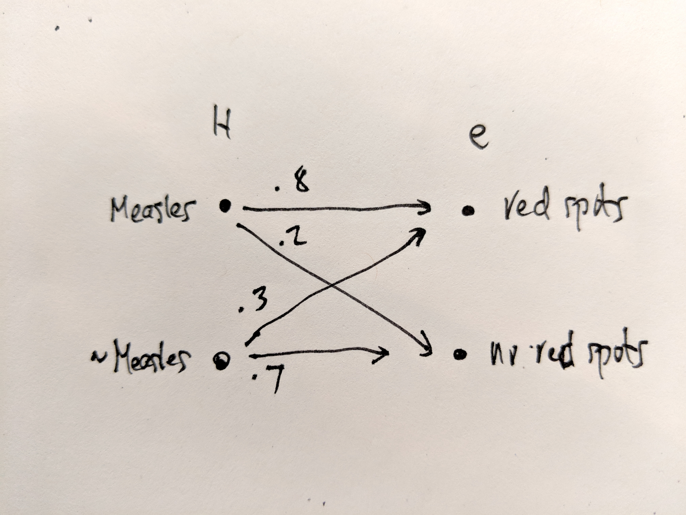
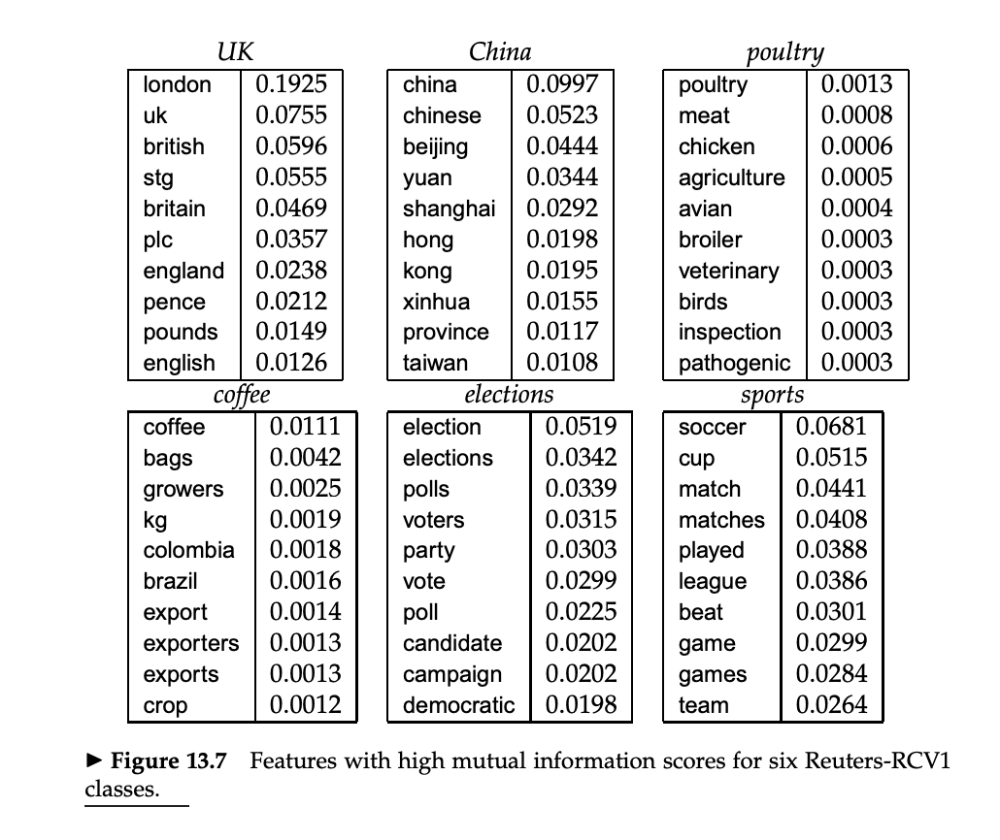
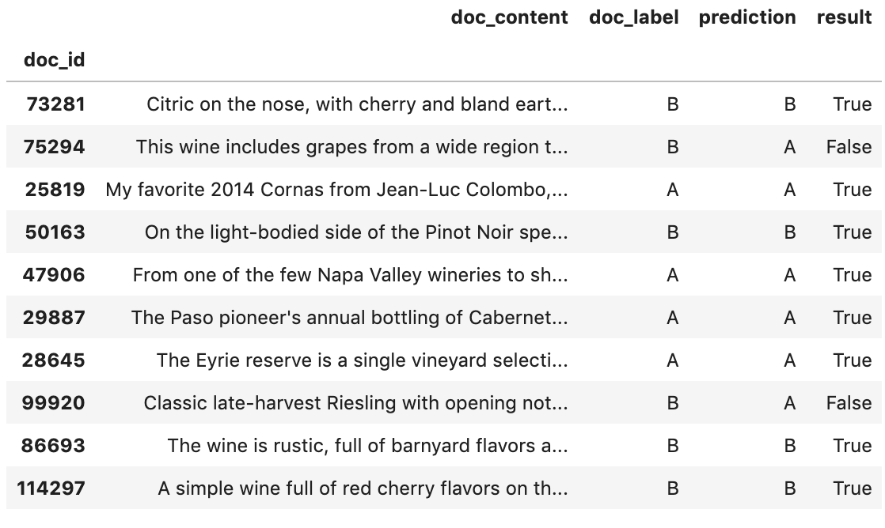
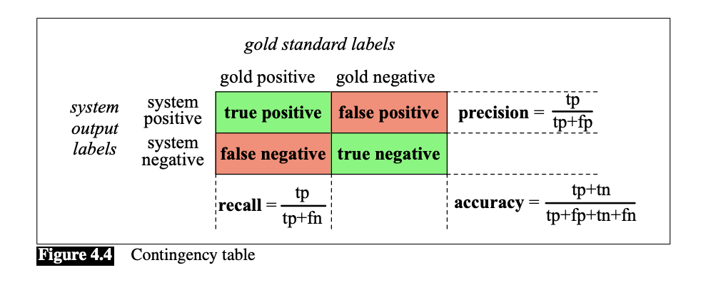

Classification and Naive Bayes
UVA DS 5559
Raf Alvarado
23 April 2019
Business
- Projects going OK?
- Any blockers?
- We will focus on them next week
- Quizzes
- Still have one more to give! :-)
- Sorry for the delay; had to travel this weekend
Review
- Sentiment analysis as a tool to study narrative
- Can be applied to newspapers as well
- Functions as event detection
- Application of time series methods
- For those in the MSDS, consider applying Hawkes process model
- Linguistic phenomena are point processes
Overview
Today, we turn to classification
Specifically, text of document classificaiton
Before getting into that, let’s situate our subject
Machine Learning and AI
Document classification is a species of classification
Classificaiton is a branch of machine learning
Machine learning is a branch of AI (historically)
Machine Learning and AI

From Credera
Machine Learning Image

Machine Learning Image

Classification
- Classification refers to the task of predicting the category of a thing when the use of the category on similar things is known
- Categories are also called classes, labels, and annotations
- Prediction based on learning the rules that govern the application of the label by humans
- Traditional AI sought to develop a deductive system of rules
- The goal was to develop encyclopaedic knowledge of the world within which inferences can be mechanically drawn
- The ancient dream of logic
- Machine learning applied more “brute force” methods to learn rules statistically
- Inductive approach
- Instead of rules, we learn statistical models
- These models may or may not be interpretable
Classification and Inference
- Inductive inference
- Learning a rule from data, and then applying that rule to other data
- Deduction = working within rules alone (e.g. theorems)
- Many forms of inference, including abduction
- Inference and prediction often constrasted
- Inference = science
- Predicton = decision-making
A More Formal Definition
- Formal definition
- \(\textbf{y}\): A vector (column) of labels
- What you are trying to predict
- \(\textbf{X}\): A matrix of feature vectors (rows, each \(\textbf{x}\))
- The information you have
- Each vector element a member of a domain (column)
- \(\hat{y}\) is the symbol for the guessed or predicted value of \(\textbf{y}\)
- \(\textbf{y}\): A vector (column) of labels
- Many synonyms for \(X\) and \(\textbf{y}\)
- treatment / response, feature / label, cause / effect, etc.
- Represented in a dataframe
- Observations = \((x_{1i}, x_{2i}, ..., x_{ji})\) and \(y_i\) (and \(\hat{y}_i\) too)
Document Classification
- \(\textbf{x}\) is \(d\) (for a document)
- \(\textbf{y}\) is \(C\) (for the classes)
- \(C = \{c_1, c_2, ..., c_j\}\)
- The features are often word counts
- \(m\) stands for a set of labeled documents
- \((d_1,c_1),...,(d_m,c_m)\)
- \(V\) often used for the vocabulary of word types
- Although \(w\) is often used for the word instance (i.e. the token)
- In addition, the position of the token is referenced by the subfix \(i\), as in \(w_i\)
Some Text Classification Tasks
- Spam detection
- Language identification
- Subject grouping
- Genre detection
- Author attribution
- Etc.
Standard Machine Classifiers for Document Classification
- Linear Regression
- Logistic Regression
- Support Vector Machines (SVMs)
- Naive Bayes
- Decision Trees and Random Forests
- Neural Networks
The Machine Learning Pipeline

Text Analytic Specific
- Data Preparation
- Data wrangling means conversion into text data model and then analytical format of features and response variable
- Often, this is a bag-of-words representation
- Feature selection may involve TFIDF or even SVD
- Expected Mutual Information, based on contribution of feature to prediction
- Modeling
- Choice of model and implementation algorithm
- Splitting into training and testing subsets
- May include further division of training set into training and held-out dev set for paramater tuning
- Performance and Evaluation
- Recall, Precision, and F-score
Text Analytic Specific (cont’d)
- Significance Testing
- Traditional statistical methods aren’t used (e.g. p-values) because performance test results are non-Gaussian
- Instead, we use non-parametric methods such as bootstrapping
- Interpretation
- Application of domain knowledge, user feedback, etc.
The Document Classification Problem
- Can be understood as a problem in Bayesian inference. You are trying to estimate \[ P(C|d) \]
That is, for document \(d\) out of all classes \(c \in C\), find the class \(c\) Maximum A Posteriori value \[ \hat{c} = \text{arg} \text{max} P(c_i|d) \]
Naive Bayes provides a method based on this idea
Naive Bayes (NB)
- Generative
- In contrast to discriminate classifiers like logistic regression
- Discriminative classifiers are more accurate and thus more common
- Generative still have a role
- Ptobabilistic
- Assigns a float between 0 and 1
- Peformant
- Not always the best performer, but very fast and easy to implement
- Used as a baseline
- Why is it called naive?
- Because of the independence assumption (more below)
Bayes’ Theorem: Derivation
\[ P(a,b) = P(a)P(b|a) \] \[ P(b,a) = P(b)P(a|b) \] \[ P(a,b) = P(b,a) \] \[ P(a)P(b|a) = P(b)P(a|b) \] \[ P(a|b) = \dfrac{P(a)P(b|a)}{P(b)} \]
Bayes’ Theorem: Elements
\[ P(a|b) = \dfrac{P(a)P(b|a)}{P(b)} \]
- \(a\): Cause, Hypothesis, Model
- \(b\): Effect, Evidence, Data
- \(P(a)\): The Prior
- \(P(b|a)\): The Likelihood
- \(P(a|b)\): The Posterior
- \(P(b)\): Normalizing constant (often drops out; also often unknowable)
Philosophical Aside
- There is a directionality implied by Bayes’ theorem
- \(a\) causes \(b\)
- \(b\) must be a member of disjoint and exhaustive set of possible outcomes (\(B\))
- \(P(B)\) sums to 1
- Note that \(A\) does not sum to one
- Each is drawn from a differenct distribution
Arrow of Information

Pearl on Likelihood

Judea Pearl, 1988, Probabilistic Reasoning in Intelligent Systems, p. 35.
Bayes’ Theorem vs Rule
- Note that Bayes’ Theorem and Bayes’ Rule are not the same
- Bayes’ Rule refers to the ability to drop out the denominator when comparing hypotheses: \[ \dfrac{P(H_1|e)}{P(H_2|e)} = \dfrac{P(H_1)P(e|H_1)}{P(H_2)P(e|H_2)} \]
Bayes Appled to Text
- Applied to problem of predicting the class of a text, we have:
\[ \hat{c} = \underset{c \in C}{\arg\max} \dfrac{P(c)P(d|c)}{P(d)} \]
- Since \(P(d)\) is common to all \(C\), we can simplify:
\[ \hat{c} = \underset{c \in C}{\arg\max} P(c)P(d|c) \]
- Now, \(d\) is just a joint distribution of features (words), so:
\[ d = (f_1, f_2, f_3, ..., f_n) \]
- And so we can rewrite our formula as:
\[ \hat{c} = \underset{c \in C}{\arg\max} P(c)P(f_1, f_2, f_3, ..., f_n|c) \]
Being Naive
- Now, the resulting likelihood becomes:
\(P(f_1, f_2, f_3, ..., f_n|c) = P(f_1)P(f_2|f_1)P(f_3|f_1,f_2) ... P(f_n|f_1,..,f_{n-1}|c)\)
- But this is too hard to compute. So we employ the “naive” assumption – which we saw earlier in creating an ngram model – that each feature is independent of the others:
\(P(f_1, f_2, f_3, ..., f_n|c) = P(f_1|c)P(f_2|c)P(f_3|c) ... P(f_n|c)\)
- Which we can express compactly as:
\(P(d|c) = \prod_{n=1}^{N} P(f_n|c)\)
- And so:
\(c_{NB} = \underset{c \in C}{\arg\max} P(c)\prod_{n=1}^{N} P(f_n|c)\)
Applying to the corpus
- In terms of our of corpus model:
\[ c_{NB} = \arg\max P(c)\prod_{id=1}^{id_{max}} P(token_{id}|c) \]
- Since sums of logs are easier to compute than products, we can do this:
\[ c_{NB} = \arg\max \log{P(c)} + \sum_{id=1}^{id_{max}} \log{P(token_{id}|c)} \]
Training the Classifier
- We estimate the probabilities in our formula by using Maximum Likelihood Estimation (MLE)
- i.e. by using frequencies as proxies for probabilities.
- So, to estimate the prior, \(P(c)\), we count the number of documents in our training set with the class and divide by the total number documents:
\[ \hat{P}(c) = \dfrac{N_{c}}{N_{d}} \]
- sAnd to estimate our likelihood, \(P(f_i|c)\), we count the frequency of \(w_i\) in all documents classified as \(c\):
\[ \hat{P}(w_i|c) = \dfrac{count(w_i,c)}{\sum_{w \in V} count(w,c)} \]
Word Problems 1
- What about words in the test set that are in one class but not in the other(s)?
- They have a probability of \(0\) for the class they don’t appear in
- Thus they will make the document have a probability of \(0\) for that class
- Consider the case of a word used ironically in the test set …
- They have a probability of \(0\) for the class they don’t appear in
- To fix, we apply LaPlace “add 1” smoothing:
\[ \hat{P}(w_i|c) = \dfrac{count(w_i,c)+1}{\sum_{w \in V} (count(w,c)+1)} = \dfrac{count(w_i,c)+1}{(\sum_{w \in V} count(w,c))+|V|} \]
- Note that \(V\) stands for the set of all words, i.e. in all classes.
- This would not matter, except we need to account for words in the test set not found in training.
Word Problems 2
- What about unknown words
- Words not in the training set at all
- The accepted solution is to ignore them
- We don’t include them in the probability function during testing or application
- Harsh, yet effective :-)
Stop Words
- It turns out that removing stop words does not improve performance
- So, we can leave them in the training set
- Keeping them out might improve compute speed slightly, though
- Not sure about keeping only TFIDF significant words, though …
Naive Bayes as Language Model
- To the extent the NB classifiers use only words, they are effectively based on language models for each class
- A Bayes model is a set of class-specific unigram language models
- A language model is the set of likelihoods for each word given a class
- Just as LDA creates language models for each topic
- We can use the likelihoods to assign probabilities to sentences \[ P(s|c) = \prod_{i \in positions} P(w_i|c) \]
- This confirms Pearl’s point about likelihoods
- The likelihoods in our model language models
- They are the building blocks of our model of language
- They have a certain independence of the text, like language models
Feature Selection

See Manning, et al. 2008
Model Performance Evaluation
- We evaluate the performance of our model by comparing the results of our predictions on the test set with the actual labels in that set
- These labels are called gold standard labels or ground truth labels
- These results are usually represented in a contingency table or confusion matrix
Results

Contingency Tables

Precision, Recall, and F-Measure
- In text analytics, we are mainly concerned with precision and recall
- Precision measures the percentage of the items that the were labeled as positive that are positive according to the human gold labels.
- TP / TP + FP
- Recall measures the percentage of items actually present in the input that were correctly labeled.
- TP / TP + FN
- F-meausre = the harmonic mean of the two
- See below
- Necessary because it’s easy to fool each measure in isolation
- Accuracy = (TP + TN) / ALL
Sensitity vs. Precision
Why is precision sometimes called sensitivity?
Used in medicine because: “A doctor can tell a patient if they’re pregnant or not or if they have cancer. Each decision may have grave consequences and thus true negatives are crucial. That’s why all the cells in the confusion matrix must be taken into account.”
Used in Information retrieval \(\therefore\) text analytics because: “A search engine only cares about the results it shows you. Are they relevant (TP) or are they spam (FP)? Did it miss any relevant results (FN)? The ocean of ignored (TN) results shouldn’t affect how good or bad a search algorithm is. That’s why true negatives can be ignored.”
Performance Metrics as Probabilities
\(P = 1\)
\(N = 0\)
\(\pi: predicted \in \{0,1\}\)
\(\alpha: actual \in \{0,1\}\)
\(T: p(\alpha = \pi) = T_0 + T_1\)
\(F: p(\alpha \not= \pi) = F_0 + F_1\)
\(TP = T_1 = p(\alpha=1, \pi=1)\)
\(TN = T_0 = p(\alpha=0, \pi=0)\)
\(FP = F_1 = p(\alpha=0, \pi=1)\)
\(FN = F_0 = p(\alpha=1, \pi=0)\)
Metrics as Probabilities
Sensitivity or Recall (TPR) \[ p(\pi=1|\alpha=1) \]
Specificity (TNR)
\[
p(\pi=0|\alpha=0)
\]
Precision (PPV)
\[
p(\alpha=1|\pi=1)
\]
Metrics as Probabilities
Accuracy: \[ \text{ACC} = \dfrac{T}{T + F} = \dfrac{p(\alpha = \pi)}{p(\alpha=\pi) + p(\alpha\not=\pi)} \]
Balanced Accuracy: \[ \text{BA} = \dfrac{R(T_0)+R(T_1)}{2} = \dfrac{p(\pi=0|\alpha=0) + p(\pi=1|\alpha=1)}{2} \]
F-Score: \[ \text{F}_\beta = \dfrac{(\beta^2 + 1)PR}{\beta^2(P+R)} \\ \]
\[ \text{F}_1 = \dfrac{2PR}{P+R} \\ \]
Sentiment Analysis Optimization Hacks
Hack 1
- Counts don’t matter as much as presence or absence in a document, so just count once per document
- Called Binary NB
- Remove duplicate words
- Or just convert count column in BOW dataframe to
boolthenint
- Or just convert count column in BOW dataframe to
Hack 2
- To handle negation – cases where words are negated – add a
not_prefix to words that follow a negation word, up to the end of a sentencedidn't like this movie, but I- becomes
didnt NOT_like NOT_this NOT_movie, but I
- Do this during preprocessing, effectively creating new words
Hack 3
- Use a lexicon to define sentiment in training and test sets
- Use just positive and negative terms in the NB equation
- Useful when we have little training data, data is sparse, or test and training sets are divergent
- Seems like cheating, tho
Hack 4
- In spam detection, use para-linguitic features
- All caps in subject line
- Mention of large sums of money
- Contains other tell-tale phrases
Hack 5
- In language ID, use byte and character ngrams
- Distinctive character sequences
- Also train on mulitlingual (e.g. Wikipedia) and geocoded (e.g. Twitter) corpora